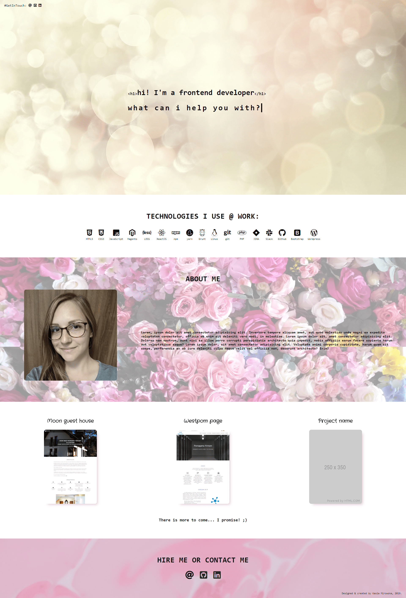

EN|
PL
<h1>cześć! jestem front-end developerem</h1>
w czym mogę Ci pomóc?
Technologie, których używam w pracy:
HTML5
CSS3
JavaScript
Magento
LESS
ReactJS
npm
yarn
Grunt
Linux
git
PHP
JIRA
Slack
Github
Bootstrap
Wordpress
O mnie
Cześć! Nazywam się Kasia Mirowska i jestem frontend web developerem i certyfikowanym Magento 2 Profesjonalnym Front-end Developerem [link]. Swoją przygodę z programowaniem zaczęłam w 2016 roku i od tamtej pory nieustannie staję się coraz lepsza w tym co robię dzięki ciągłemu dokształcaniu się i uczeniu nowych technologii. Jako osoba jestem bardzo ambitna i zmotywowana oraz skupiona na osiąganiu moich celów. Jestem towarzyska, pokojowo nastawiona do świata, myślę pozytywnie i mam empatyczne nastawienie do innych. W wolnym czasie uprawiam dużo sportu, czytam książki i oczywiście uczę się programowania.
Moja oferta:
Jeśli potrzebujesz wizytówki dla swojej firmy lub strony promocyjnej np. wydarzenia, które organizujesz - chętnie pomogę. Poniżej zamieszczam listę zleceń, które mogę wykonać:
- strony internetowe typu wizytówka, strona promocyjna, strona złożona z kilku podstron,
- strony oparte o platformę CMS (WordPress),
- frontend dla Twojego sklepu internetowego opartego na Magento 2,
- code review Twojego kodu HTML, CSS, JavaScript i jego frameworków.
Strona dla Westpom

Stworzyłam tę stronę dla firmy IT w 2017 roku. Od tamtej pory wiele się zmieniło w moich umiejętnościach, jednak jestem dumna z tego wykonania. Technologie, których tam użyłam to Bootstrap 4, jQuery (żeby uczynić stronę bardziej interaktywną), PHP (aby formularz kontaktowy działał) oraz sliderów Slick. Oczywiście strona jest w pełni responsywna.
>> Odwiedź tę stronęDom gościnny MOON

Ta strona została stworzona w 2018 roku. Jest oparta o grid Bootstrapa 4 ze sliderem Fotorama i elementami interaktywnymi stworzonymi w jQuery.
>> Odwiedź tę stronęMy portfolio

To jest strona, którą aktualnie odwiedzasz. :) Użyłam animacji z CSS3, gradientów, właściwości box-shadows, flexboxa i CSS gridu by stworzyć jej obecny wygląd.
>> Odwiedź tę stronę